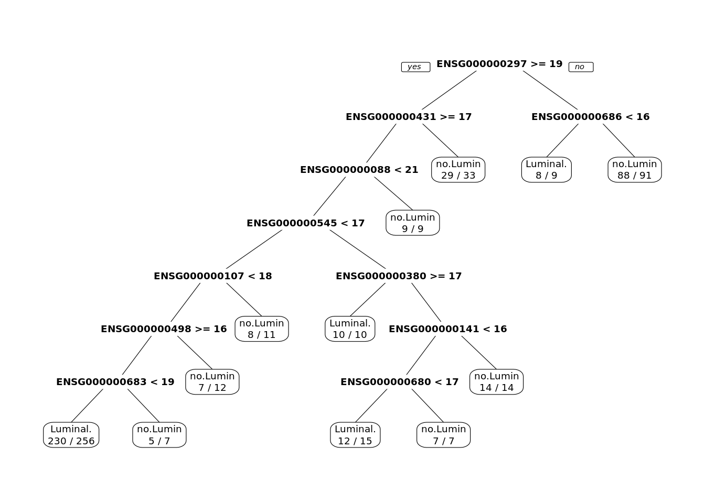
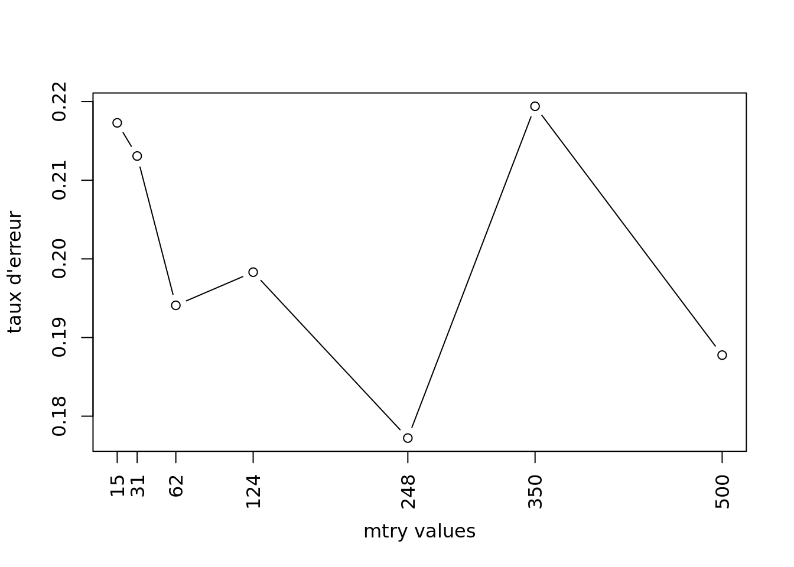
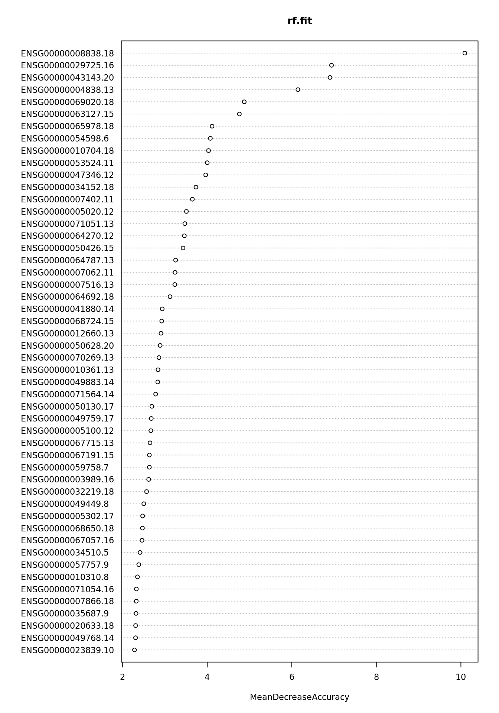
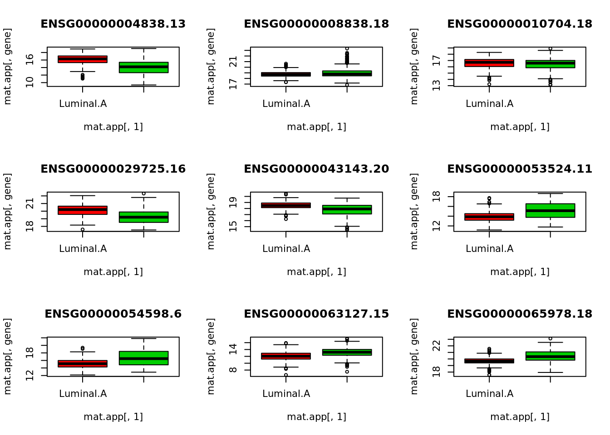
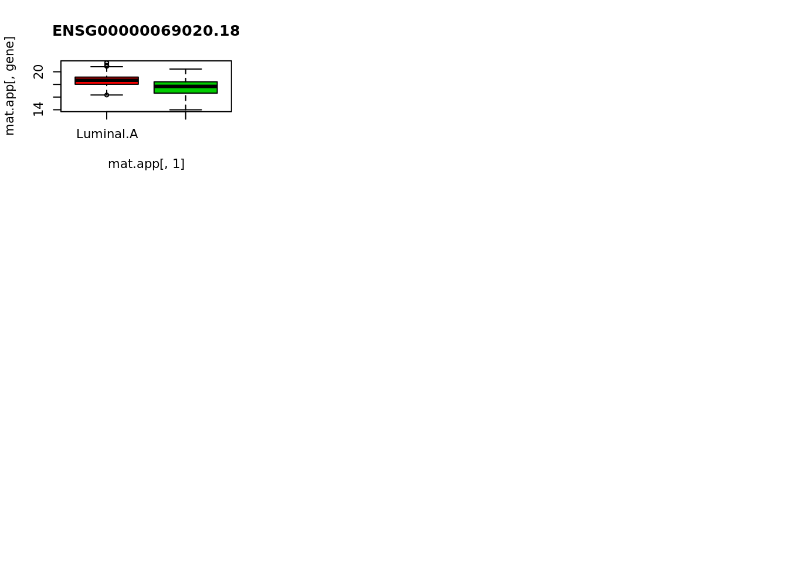
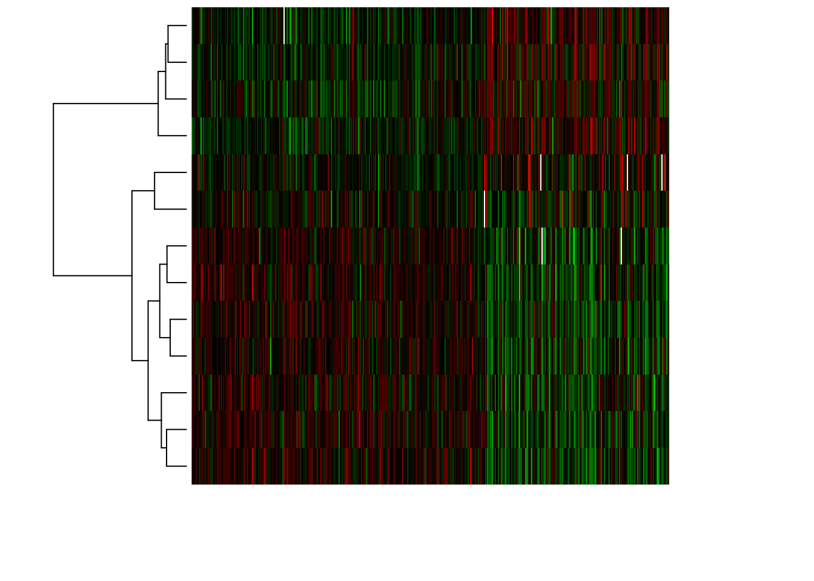
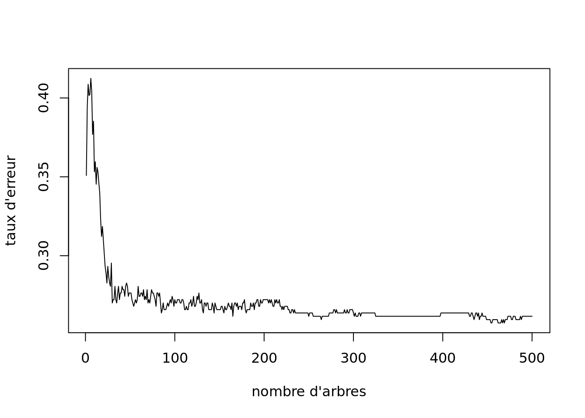
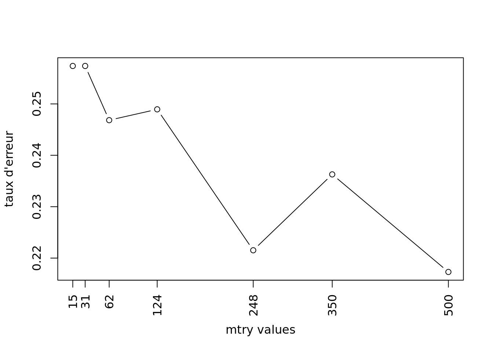
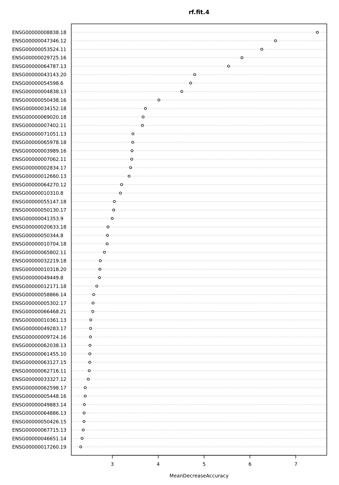

Module 3 - Analyse statistique avec R - Séance 7
DUBii 2020
Leslie REGAD and Frédéric GUYON (Université Paris Diderot), adapted by Jacques va Helden and Olivier Sand
2020-06-10
Le but de ce TP est de développer des modèles statistiques pour prédire le type de cancer en utilisant les données de l’étude TCGA (The Cancer Genome Atlas; https://cancergenome.nih.gov/) qui regroupent des données RNA-seq de patients atteints du cancer du sein.
Pour ce TP, vous utiliserez les mêmes données que celles que vous avez utilisées pour le TP clustering (séance 4) :
- fichier
BIC_log2-norm-counts_edgeR_DEG_top_1000.tsv.gzqui correspond au fichier d’expression pour les 1000 gènes (lignes) les plus significatifs pour 819 échantillons (colonnes).
- fichier
BIC_sample-classes.tsv.gzqui contient les étiquettes des 819 échantillons.
Sur le serveur Rstudio de l’IFB-core-cluster, les données sont dans le répertoire : /shared/projects/du_bii_2019/data/module3/seance4/BIC/
si vous travaillez sur une installation locale, vous pouvez télécharger un clone de ce cours
mkdir -p ~/DUBii_clones
cd ~/DUBii_clones
git clone https://github.com/DU-Bii/module-3-Stat-R.git
cd module-3-Stat/Au cours de ce TP, vous allez développer différents modèles statistiques :
- Dans un premier temps, vous construirez des modèles pour prédire si le cancer est du type “lumina.A” ou pas en utilisant :
- un modèle CART,
- un modèle de random forest,
- un modèle de SVM,
- un modèle CART,
- Dans un second temps, vous construirez un modèle de random forest pour prédire un des 4 types de cancer : Basal.like, HER2pos, Luminal.A ou Luminal.B.
1 Préparation des données
- Ouvrez le fichier d’expression des gènes en utilisant la commande
read.table(). Stockez ce data.frame dans l’objetBIC.expr. Vérifiez la taille du data.frame généré en utilisant la commandedim().
data.folder <- "/shared/projects/du_bii_2019/data/module3/seance4/BIC"
# data.folder <- "data/BIC"
# data.folder <- "/shared/projects/dubii2020/trainers/github_clones/study-cases/Homo_sapiens/TCGA_study-case/TCGA_AML_data"BIC.expr.file <- file.path(data.folder, "BIC_log2-norm-counts_edgeR_DEG_top_1000.tsv.gz")
#BIC.expr.file <- file.path(data.folder, "AML_counts_filtered-genes.tsv.gz")
BIC.expr <- read.table(file = BIC.expr.file, header = TRUE)
dim(BIC.expr)[1] 1000 819- Ouvrez le fichier qui contient les étiquettes des échantillons en utilisant la commande
read.table(). Stockez ce data.frame dans l’objetBIC.sample.classes.
BIC.sample.classes <- read.table(file.path(data.folder, "BIC_sample-classes.tsv.gz"),header = TRUE)
#BIC.sample.classes <- read.table(file.path(data.folder, "AML_sample-classes.tsv.gz"),header = TRUE)- Vérifiez le nombre d’échantillons disponibles dans ce jeu de données.
[1] 819 4- Déterminez le type de variables disponibles dans ce jeu de données en utilisant la fonction
summary().
cancer.type ER1 PR1 Her2
Basal.like :131 Negative:184 Negative:267 Negative:631
HER2pos : 41 Positive:635 Positive:552 Positive:188
Luminal.A :422
Luminal.B :118
Unclassified:107 La première colonne du data.frame BIC.sample.classes renseigne sur le type de cancer de chaque échantillon. Comme vous pouvez le voir, il y a 5 types de cancer, dont un type qui est Unclassified. Lors de la prédiction du type de cancer, ce type risque de biaiser les résultats. Vous allez supprimer ces échantillons des jeux de données.
A la fin du TP, vous utiliserez les modèles statistiques construits pour prédire le type de cancer de ces échantillons de type “Unclassified”.
- Supprimez les échantillons correspondant au type
Unclassifieddans les deux data.frames.
- En utilisant la fonction
which(), identifiez les lignes du data.frameBIC.sample.classesqui correspondent au typeUnclassified. Vérifiez que vous avez bien sélectionné 107 individus.
[1] 107- Supprimez ces individus dans le data.frame
BIC.sample.classesen utilisant l’indexation négative. Vérifiez la taille du nouveau data.frame. Le nouveau data.frame se nommeraBIC.sample.classes.4.
[1] 712 4- Supprimez les échantillons correspondant au type
Unclassifieddu data.frameBIC.expr. Attention, dans le data.frameBIC.exprles échantillons sont présentés en colonnes.
[1] 1000 712- Pour construire les premiers modèles, vous n’allez pas utiliser les quatre types de cancers, mais seulement deux :
- Luminal.A,
- non Luminal.A : qui correspondent aux autres types. Vous allez donc transformer la colonne
cancer.typedu data.frameBIC.sample.classes.2en une variable qualitative à deux classes : “Luminal.A” ou “no.Luminal.A”.
- Luminal.A,
- Créez le vecteur
new.typequi contient 712 fois (nrow(BIC.sample.classes.2)) la valeur “Luminal.A”.
- Identifiez les individus qui ne contiennent pas “Luminal.A” dans la première colonne (colonne
cancer.type) du data.frameBIC.sample.classes.4.
- Pour ces individus, assignez la valeur “no.Luminal.A” au vecteur
new.type.
- Remplacez la colonne
cancer.typedu data.frameBIC.sample.classes.2par le vecteurnew.typeque vous aurez transformé en facteur (fonctionas.factor())
BIC.sample.classes.2 <- BIC.sample.classes.4
BIC.sample.classes.2[,"cancer.type"] = as.factor(new.type)- Suppression des variables corrélées
Une des étapes du nettoyage du jeu de données correspond à supprimer les variables (ici les gènes) corrélées. Pour cela, vous allez utiliser la fonction findCorrelation() de la librairie caret. Cette fonction prend en entrée la matrice de corrélation entre les variables et le seuil de corrélation à partir duquel on considère que deux variables sont corrélées.
- Calculez la matrice de corrélation entre les gènes différentiellement exprimés. Comme dans le data.frame
BIC.expr.4les gènes sont en lignes, pensez à transposer votre data.frame.
[1] 1000 1000- Identifiez les gènes à supprimer en utilisant un seuil de corrléation de 0.8 et la fonction
findCorrelation(). Combien de gènes allez vous supprimer.
[1] 36- Supprimez ces gènes du data.frame
BIC.expr.4.
[1] 964 712- Pour créer les modèles de prédiction, il est nécessaire d’avoir un data.frame qui regroupe pour chaque échantillon les gènes et son type de cancer.
Créez le data.frame
df.dataqui contient :- en lignes ; les échantillons
- en colonnes : les gènes et le type de cancer.
Pour cela, utilisez la commandedata.frame().
- La première colonne de votre data.frame
df.datadoit correspondre aux types de cancer.
- les colonnes 2 à 965 doivent correspondre aux gènes.
- en lignes ; les échantillons
[1] 712 965- Assignez “cancer.type” comme nom de colonne à la première colonne de
df.data.
| cancer.type | ENSG00000000003.14 | ENSG00000000419.12 | ENSG00000000457.13 | ENSG00000000460.16 | |
|---|---|---|---|---|---|
| X1AB92ADA.637E.4A42.A39A.70CEEEA41AE3 | Luminal.A | 16.52775 | 17.50349 | 17.96040 | 16.77151 |
| X06CCFD0F.7FB8.471E.B823.C7876582D6FC | no.Luminal.A | 18.67677 | 18.15315 | 17.51914 | 16.85386 |
| D021A258.8713.4383.9DCA.45E2F54A0411 | Luminal.A | 17.75758 | 16.58779 | 19.09800 | 18.15086 |
| C705FA90.D9AA.4949.BACA.1C022A14CB03 | Luminal.A | 18.83214 | 17.81858 | 19.01201 | 17.85704 |
| X85380A2D.9951.4D4B.A2A4.6F5F2AFC54E3 | Luminal.A | 18.52097 | 17.30436 | 18.63385 | 17.61519 |
| F53A9C63.1AF7.4CBC.B8B7.4AA7AAED3364 | Luminal.A | 16.26266 | 18.52012 | 17.55598 | 17.35059 |
| X13EF5323.EAD9.4BC7.8AC4.33875BF12E17 | no.Luminal.A | 17.38771 | 17.97410 | 18.22298 | 17.05569 |
| X079EACA1.0319.4B54.B20B.673F4576C69D | no.Luminal.A | 16.95062 | 17.75839 | 18.04384 | 17.74923 |
| X2E63B18E.FDC1.414C.9291.492D3D380232 | no.Luminal.A | 18.66658 | 17.17837 | 17.21481 | 16.00784 |
| F5303C4B.7008.44AF.8D22.0BA38750DEA2 | no.Luminal.A | 18.52184 | 17.05632 | 17.93438 | 17.02691 |
2 Préparation des échantillons d’apprentissage et de test
L’échantillon d’apprentissage est l’échantillon qui va permettre d’apprendre les modèles. Il sera constitué de 2/3 des échantillons sélectionnés de manière aléatoire.
L’échantillon de test est l’échantillon qui va permettre d’estimer les performances non biaisées des modèles. Il sera constitué du 1/3 des échantillons restant.
- En utilisant la fonction
sample()créez un vecteur qui contient le numéro d’indice de 2/3 des individus choisis aléatoirement. Ces individus vont constituter le jeu d’apprentissage.
- Créez le data.frame
mat.appqui contient les valeurs d’expression des gènes et le type de cancer pour les individus choisis aléatoirement. Cette matrice correspond au jeu d’apprentissage.
[1] 474 965- Créez le data.frame
mat.testqui contient les valeurs d’expression de gènes et le type de cancer pour les individus restants (1/3). Cette matrice correspond au jeu test.
[1] 238 9653 Validation des deux échantillons.
- Calculez une analyse en composantes principale en utilisant le data.frame
df.data. Pour cela, utilisez la fonctionPCA()de la librairieFactoMineR. Pensez à ne pas prendre en compte la colonne renseignant sur le type de cancer car ce n’est pas une variable quantitative.
- Créez un vecteur
vcol.setqui contiendra les couleurs associés à chaque indidivu suivant s’il appartient au jeu d’apprentissage (en magenta) ou au jeu test (en bleu). Pour cela, :
- Créez le vecteur
vcol.setqui contient 712 fois (nrow(df.data)) la couleur bleu.
- Dans ce vecteur, remplacez la valeur “bleu” des individus appartenant à l’échantillon d’apprentissage (
ind.app) par la valeur “magenta”.
- Représentez la projection des individus sur les 2 premières composantes principales en colorant les individus suivant l’échantillon auquel ils appartiennent.
plot(pca.res,
habillage = "ind",
col.hab = vcol.set, graph.type = "classic",
label = "none")
legend("topleft",
legend = c("training set",
"test set"),
col = c("blue","magenta"), pch = 19)Projection of the samples on the two first principal components.
- Déterminez la répartition des deux types de cancer dans les échantillons d’apprentissage et test.
par(mfrow=c(2,1))
barplot(table(mat.app[,"cancer.type"]), main="jeu d'apprentissage")
barplot(table(mat.test[,"cancer.type"]), main="jeu de test")
D’après les résultats obtenus, concluez sur la validité les échantillons d’apprentissage et test. Si vous concluez au fait que les deux échantillons ne sont pas valides, alors reprenez la procédure pour générer à nouveau des échantillons d’apprentissage et de test.
4 Prédiction du type de cancer en utilisant une approche de CART
- A partir des données de l’échantillon d’apprentissage (
mat.app), construisez un modèle de CART permettant de prédire le type de cancer (2 classes) en fonction de l’expression des gènes. Pour cela, utilisez la fonctionrpart()de la librairierpart.
n= 474
node), split, n, loss, yval, (yprob)
* denotes terminal node
1) root 474 197 Luminal.A (0.58438819 0.41561181)
2) ENSG00000029725.16>=19.04739 374 108 Luminal.A (0.71122995 0.28877005)
4) ENSG00000043143.20>=17.37762 341 79 Luminal.A (0.76832845 0.23167155)
8) ENSG00000008838.18< 20.71319 332 70 Luminal.A (0.78915663 0.21084337)
16) ENSG00000054598.6< 17.01421 286 46 Luminal.A (0.83916084 0.16083916)
32) ENSG00000010704.18< 17.86318 275 38 Luminal.A (0.86181818 0.13818182)
64) ENSG00000049883.14>=15.6608 263 31 Luminal.A (0.88212928 0.11787072)
128) ENSG00000068366.19< 19.43363 256 26 Luminal.A (0.89843750 0.10156250) *
129) ENSG00000068366.19>=19.43363 7 2 no.Luminal.A (0.28571429 0.71428571) *
65) ENSG00000049883.14< 15.6608 12 5 no.Luminal.A (0.41666667 0.58333333) *
33) ENSG00000010704.18>=17.86318 11 3 no.Luminal.A (0.27272727 0.72727273) *
17) ENSG00000054598.6>=17.01421 46 22 no.Luminal.A (0.47826087 0.52173913)
34) ENSG00000038002.8>=17.26743 10 0 Luminal.A (1.00000000 0.00000000) *
35) ENSG00000038002.8< 17.26743 36 12 no.Luminal.A (0.33333333 0.66666667)
70) ENSG00000014138.8< 16.3815 22 10 Luminal.A (0.54545455 0.45454545)
140) ENSG00000068024.16< 17.3767 15 3 Luminal.A (0.80000000 0.20000000) *
141) ENSG00000068024.16>=17.3767 7 0 no.Luminal.A (0.00000000 1.00000000) *
71) ENSG00000014138.8>=16.3815 14 0 no.Luminal.A (0.00000000 1.00000000) *
9) ENSG00000008838.18>=20.71319 9 0 no.Luminal.A (0.00000000 1.00000000) *
5) ENSG00000043143.20< 17.37762 33 4 no.Luminal.A (0.12121212 0.87878788) *
3) ENSG00000029725.16< 19.04739 100 11 no.Luminal.A (0.11000000 0.89000000)
6) ENSG00000068650.18< 16.30746 9 1 Luminal.A (0.88888889 0.11111111) *
7) ENSG00000068650.18>=16.30746 91 3 no.Luminal.A (0.03296703 0.96703297) *- En utilisant la fonction
prp()de la librairierpart.plot(), représentez le modèle obtenu.

- Sur les données de l’échantillon d’apprentissage calculez l’accuracy du modèle (=le taux de bien prédit) (\(Acc = \frac{VP+VN}{VP+VN+FP+FN}\)) .
- En utilisant la fonction
predict(), prédisez le type de cancer pour chaque individu de l’échantillon d’apprentissage. N’oubliez pas de préciser l’argumenttype="class"pour préciser que vous faites de la classification. Stockez ces valeurs prédites dans le vecteurpred.app.
Attention, la fonctionpredict()est une fonction générique. Dans ce cas, vous utilisez la fonctionpredict()appliquée à un objetrpart. Pour avoir plus d’informations sur les arguments de la fonction, vous devez utiliser l’aide de la fonctionpredict.rpart().
- A l’aide de la fonction
table(), calculez la matrice de confusion entre les données prédites sur l’échantillon d’apprentissage (contenues dans le vecteurpred.app) et les vraies valeurs (contenues dans la colonnecancer.typedu data.framemat.app).
tc.rpart.app <- table(pred.app, mat.app[,"cancer.type"])
kable(tc.rpart.app, caption = "Confusion table of the CART model for the predictions obtained with the training set (learning errors). ")| Luminal.A | no.Luminal.A | |
|---|---|---|
| Luminal.A | 260 | 30 |
| no.Luminal.A | 17 | 167 |
- Calculez l’accuracy du modèle sur les données de l’apprentissage
[1] 0.9008439- En utilisant la même procédure que celle utilisée pour calculer l’accuracy sur le jeu d’apprentissage, calculez l’accuracy du modèle sur l’échantillon test
pred.test <- predict(rpart.fit, newdata = mat.test, type = "class")
tc.rpart.test <- table(pred.test, mat.test[,"cancer.type"])
kable(tc.rpart.test, caption = "Confusion table for the predictions obtained from the testing set. ")| Luminal.A | no.Luminal.A | |
|---|---|---|
| Luminal.A | 117 | 22 |
| no.Luminal.A | 28 | 71 |
[1] 0.789916En comparant les performances obtenues sur l’échantillon d’apprentissage et de test, vous constatez que les performances obtenues sur l’échantillon d’apprentissage (Acc=0.9) sont plus grandes que celles obtenues sur l’échantillon test (Acc=0.79). Ainsi, vous observez un phénomène de sur-apprentissage. Le modèle apprend très bien les données de l’échantillon d’apprentissage, mais prédit moins bien les données du jeu test.
Pour diminuer ce sur-apprentissage, une des solutions serait d’élaguer l’arbre, c’est-à-dire d’enlever certaines branches. Ainsi, le nouveau modèle obtenu serait moins performant sur les données d’apprentissage, mais plus performant sur les données du jeu test.
5 Prédiction du type de cancer en utilisant une approche de random forest
- A partir des données de l’échantillon d’apprentissage, construisez une forêt aléatoire permettant de prédire le type de cancer (2 types) en fonction de l’expression des gènes.
- Pour cela, utilisez la fonction
randomForest()de la librairierandomForestavec les paramètresmtryetmtreepar défaut. Stockez le modèle dans l’objetrf.fit.
- Affichez à l’écran le modèle créé.
Call:
randomForest(formula = cancer.type ~ ., data = mat.app)
Type of random forest: classification
Number of trees: 500
No. of variables tried at each split: 31
OOB estimate of error rate: 21.31%
Confusion matrix:
Luminal.A no.Luminal.A class.error
Luminal.A 250 27 0.09747292
no.Luminal.A 74 123 0.37563452kable(as.data.frame(rf.fit$confusion),
caption = "Confusion table obtained by Random Forest on the training set (learning errors). ")| Luminal.A | no.Luminal.A | class.error | |
|---|---|---|---|
| Luminal.A | 250 | 27 | 0.0974729 |
| no.Luminal.A | 74 | 123 | 0.3756345 |
- Choix de la valeur du paramètre
ntree.
- L’objet
rf.fitcréé est une liste qui contient plusieurs éléments. L’élementerr.ratecontient les erreurs commises par le modèle contenant \(m\) arbres Représentez le taux d’erreur (Misclassification Rate) en fonction du nombre d’arbres présentant dans la forêt.
plot(rf.fit$err.rate[,1],
type = "l",
main = "Random forest: impact of the number of trees",
xlab = "Number of trees in the forest",
ylab = "Misclassification error rate")Random forest: impact of the number of tree on the misclassification error rate (MER)
- A partir de ce graphique, choisissez le nombre d’arbres optimal, noté \(ntree_{opt}\).
- Choix de la valeur optimale pour le paramètre
mtry.
Remarque : cette étape est coûteuse en temps de calculs.
Pour trouver la valeur optimale de mtry, vous allez calculer plusieurs modèles en variant la valeur du paramètre mtry. Pour chaque modèle l’erreur commise par le modèle sera stockée dans un vecteur. La valeur optimale de mtry correspondra à la valeur du mtry du modèle donnant le plus faible taux d’erreur.
- Calculez les modèles pour des valeurs de
mtryde 15, 30, 62, 124, 248, 350, 500, et la valeur dentreeoptimale. Le taux d’erreur de chaque modèle sera stockée dans le vecteurv.err.
v.err <- NULL
v.mtry <- c(15, 31, 62, 124, 248, 350, 500)
for(i in v.mtry){
set.seed(123)
rf.fit <- randomForest(cancer.type~., data = mat.app, ntree=ntree.opt, mtry=i)
v.err <- c(v.err, rf.fit$err.rate[ntree.opt,1])
}- Représentez graphiquement les erreurs commises par les modèles en fonction de la valeur de
mtry.
plot(v.mtry, v.err, type ="b", xlab="mtry values", ylab="taux d'erreur", xaxt="n")
axis(1, at=v.mtry, labels=v.mtry, las=2)
- A partir de ce graphique, déterminez la valeur optimale de
mtry.
- Calcul du modèle avec les paramètres optimaux.
- Calculez le modèle random forest sur l’échantillon d’apprentissage en utilisant les valeurs optimales des paramètres
mtryetntree. Dans la fonctionrandomForest(), ajouter l’argumentimportance=TRUE. Cet argument vous permettra de stocker l’importance des variables.
- Visualisez le modèle et la table de confusion obtenue sur les échantillons OOB.
Call:
randomForest(formula = cancer.type ~ ., data = mat.app, ntree = ntree.opt, mtry = 248, importance = TRUE)
Type of random forest: classification
Number of trees: 200
No. of variables tried at each split: 248
OOB estimate of error rate: 19.62%
Confusion matrix:
Luminal.A no.Luminal.A class.error
Luminal.A 246 31 0.1119134
no.Luminal.A 62 135 0.3147208- Calcul des performances du modèle random forest
Pour comparer les performances de ce modèle, avec le modèle CART calculé précédemment, il faut calculer l’accuracy du modèle rf.fit sur les données des échantillons d’apprentissage et de test.
- Calculez l’accuracy du modèle sur les données de l’apprentissage
# Prédiction du type de cancer des individus du jeu d'apprentissage
pred.app <- predict(rf.fit, newdata = mat.app, type="class")
# matrice de confusion entre les données prédites sur l'échantillon d'apprentissage et les vraies valeurs.
tc.rf.app <- table(pred.app, mat.app[,"cancer.type"])
tc.rf.app
pred.app Luminal.A no.Luminal.A
Luminal.A 277 0
no.Luminal.A 0 197# accuracy* du modèle sur les données de l'apprentissage
acc.rf.app <- sum(diag(tc.rf.app))/sum(tc.rf.app)
acc.rf.app[1] 1- Calcul de l’accuracy sur l’échantillon test
# prediction
pred.test <- predict(rf.fit, newdata = mat.test, type="class")
# table de confusionr.fit
tc.rf.test <- table(pred.test, mat.test[,"cancer.type"])
tc.rf.test
pred.test Luminal.A no.Luminal.A
Luminal.A 133 25
no.Luminal.A 12 68[1] 0.8445378Comparez les performances des modèles de CART et de Random forest.
Etude de l’importance des variables (ici les gènes) dans le modèle.
- Représentez graphiquement l’importance de chaque gène en utilisant la fonction
varImpPlot()

Identifiez les gènes qui permettent de différentier le cancer Luminal.A des autres cancers.
Pour chaque gene sélectionné, tracez la distribution de l’expression du gène chez les patients atteints d’un cancer de type Luminal.A et chez les autres patients d’après les données d’apprentissage.
v.imp <- importance(rf.fit)[,"MeanDecreaseAccuracy"]
gene.sel <- names(which(v.imp>4))
par(mfrow=c(3,3))
for(gene in gene.sel){
boxplot(mat.app[,gene]~mat.app[,1],col=c(2,3), main=gene)
}
- Représentez la matrice des données en focalisant sur les gènes sélectionnées et en utilisant une heatmap.
#Trier les individus par type de cancer
ind.app.lA <- which(mat.app[,"cancer.type"]=="Luminal.A")
ind.tri <- c(ind.app.lA, setdiff(1:nrow(mat.app), ind.app.lA))
mat.app.tri <- t(mat.app[ind.tri, gene.sel])
# Compute mean value per gene
gene.means <- apply(mat.app.tri, 1, mean)
gene.sd <- apply(mat.app.tri, 1, sd)
# Compute gene-wise centered expression values
BIC.expr.genes.centered <- mat.app.tri - gene.means
# Compute gene-wise centred + scaled expression values
BIC.expr.genes.standardized <- BIC.expr.genes.centered / gene.sd
## define a Blue - White - Red palette
frenchflag.palette <- colorRampPalette(c('dark blue','white','dark red'))
## Define a green - black - red palette
GBR.palette <- colorRampPalette(c('green','black','red'))
heatmap(as.matrix(BIC.expr.genes.standardized),
zlim = c(-4,4), Colv=NA,
distfun = function(x) as.dist(1 - cor(t(x), method = "spearman")),
hclustfun = function(x) hclust(x, method = "ward.D2"),
labRow = NA, labCol = NA, # DO not print the labels (unreadable anyway)
col = GBR.palette(100),
scale = "none")
6 Prédiction du type de cancer en utilisant les Support Vecteur Machines
- utilisation avec formule R
- utilisation classique
- erreur d’apprentissage avec les paramètres par défaut
- surapprentissage avec gaussiennes très resserrées
- surapprentissage avec cost élevé
- évaluation d’erreur de test (en surapprentissage)
Xtest=subset(mat.test, select = -cancer.type)
pred=predict(model, Xtest)
table(pred, mat.test$cancer.type)- évaluation d’erreur de test (avec paramètres par défaut)
7 Prédiction des échantillons classés comme “Unclassified”
Lors de l’étude du jeu de données initial, vous avez déterminé que 107 échantillons avaient été classés comme “Unclassified”. En utilisant les modèles de random forest et de SVM, prédisez le type de cancer pour ces individus. Comparez les résultats obtenus avec les deux modèles.
- Prédiction du type de cancer en utilisant le modèle random forest
mat.pred <- t(BIC.expr)
pred.uncl.rf <- predict(rf.fit, newdata = mat.pred[ind.uncl,])
table(pred.uncl.rf)pred.uncl.rf
Luminal.A no.Luminal.A
51 56 - Prédiction du type de cancer en utilisant le modèle SVM
model=svm(cancer.type~., data=mat.app)
pred.uncl.svm <- predict(model, newdata = mat.pred[ind.uncl,])
table(pred.uncl.svm)pred.uncl.svm
Luminal.A no.Luminal.A
62 45 - Calcul de la table de confusion entre les deux vecteurs de prédiction.
pred.uncl.svm
pred.uncl.rf Luminal.A no.Luminal.A
Luminal.A 49 2
no.Luminal.A 13 438 Prédiction des 4 types de cancer
- Préparation du jeu de données
Créez un nouveau data.frame (df.data.4) qui contient les données d’expression de gènes contenu dans le data.frame BIC.expr.4 et le type de cancer pour chaque échantillon (définit en 4 types).
df.data.4 <- data.frame(as.character(BIC.sample.classes.4[,1]), t(BIC.expr.4))
df.data.4[,1] <- as.factor(df.data.4[,1])
colnames(df.data.4)[1] <- "cancer.type"- Préparation des échantillons d’apprentissage et de test
- En reprenant les individus sélectionnés pour la création de l’échantillon d’apprentissage
ind.app, créez les data.framesmat.app.4etmat.test.4qui contiennent les données de l’échantillon d’apprentissage et celui de test.
[1] 474 965- Préparez l’échantillon test
[1] 238 965- Déterminez les paramètres
mtryetntreeoptimaux pour le random forest permettant de prédire les 4 types de cancer.
- Déterminez la valeur optimale du paramètre
ntree.
rf.fit.4 <- randomForest(cancer.type~., data=mat.app.4)
plot(rf.fit.4$err.rate[,1], type="l", ylab = "taux d'erreur", xlab="nombre d'arbres")
- Déterminez la valeur optimale du paramètre
mtry.
v.err <- NULL
v.mtry <- c(15, 31, 62, 124, 248, 350, 500)
for(i in v.mtry){
set.seed(123)
rf.fit <- randomForest(cancer.type~., data = mat.app.4, ntree=150, mtry=i)
v.err <- c(v.err, rf.fit$err.rate[150,1])
}
plot(v.mtry, v.err, type ="b", xlab="mtry values", ylab="taux d'erreur", xaxt="n")
axis(1, at=v.mtry, labels=v.mtry, las=2)
- Calculez le modèle avec les paramètres optimaux.
Calculez à nouveau le modèle sur l’échantillon d’apprentissage en utilisant les valeurs optimales des paramètresmtryetntree. Dans la fonctionrandomForest(), ajouter l’argumentimportance=TRUE.
- Visualisez le modèle et la table de confusion obtenue sur les échantillons OOB.
Call:
randomForest(formula = cancer.type ~ ., data = mat.app.4, ntree = 150, mtry = 124, importance = TRUE)
Type of random forest: classification
Number of trees: 150
No. of variables tried at each split: 124
OOB estimate of error rate: 24.05%
Confusion matrix:
Basal.like HER2pos Luminal.A Luminal.B class.error
Basal.like 74 0 16 1 0.18681319
HER2pos 6 8 7 7 0.71428571
Luminal.A 3 0 268 6 0.03249097
Luminal.B 0 0 68 10 0.87179487- Calculez les performances du modèle random forest sur l’échantillon d’apprentissage et de test.
- Calcul de l’accuracy sur l’échantillon d’apprentissage.
pred.app.4 <- predict(rf.fit.4, newdata = mat.app.4, type="class")
tc.rf4.app <- table(pred.app.4, mat.app.4[,"cancer.type"])
tc.rf4.app
pred.app.4 Basal.like HER2pos Luminal.A Luminal.B
Basal.like 91 0 0 0
HER2pos 0 28 0 0
Luminal.A 0 0 277 0
Luminal.B 0 0 0 78[1] 1- Calcul de l’accuracy sur l’échantillon test
pred.test.4 <- predict(rf.fit.4, newdata = mat.test.4, type="class")
tc.rf4.test <- table(pred.test.4, mat.test.4[,"cancer.type"])
tc.rf4.test
pred.test.4 Basal.like HER2pos Luminal.A Luminal.B
Basal.like 36 7 1 1
HER2pos 0 1 0 0
Luminal.A 4 1 143 29
Luminal.B 0 4 1 10[1] 0.7983193- Etude de l’importance des descripteurs dans le modèle.
- Représentez graphiquement la valeur d’importance des différents gènes en utilisant la fonction
varImpPlot()
